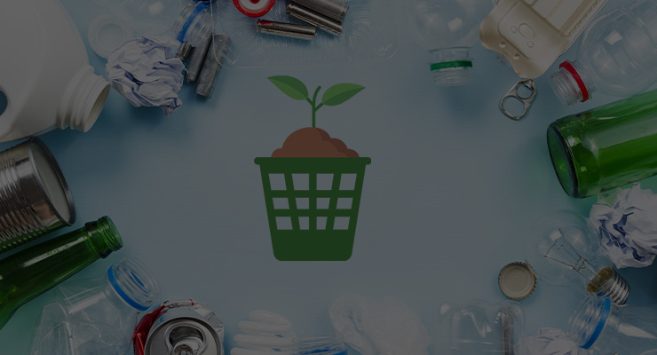
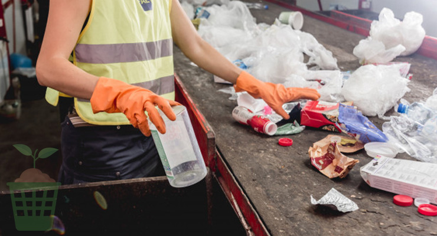
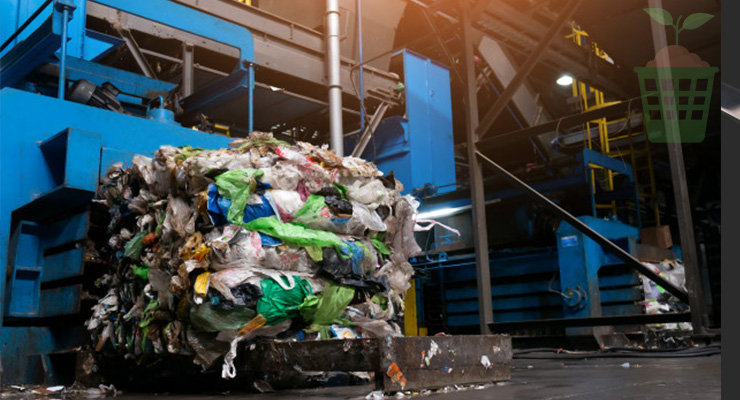

ASESORAMIENTO MEDIOAMBIENTAL Y DOCUMENTAL
Asesoramiento eficaz y profesional sobre la aplicación de las normativas, de forma específica, a sus procesos.
Se realiza la visita a las instalaciones para aclarar todas las dudas con respecto a las destrucciones, así como la cotización de dicha destrucción.
RECOGIDA Y TRANSPORTE DE LOS RESIDUOS
Se realiza la recolección de los residuos mediante una flota de vehículos recolectores ajustados a los requisitos técnicos, ambientales y legales de cualquier organización.
Camioneta, tórton, góndola, tráiler (plataforma y caja seca)

ALMACENAJE EN NUESTRAS INSTALACIONES
Almacenamiento temporal de los residuos hasta su gestión final: el reciclado, un gestor especializado o el vertedero autorizado

La destrucción procede según su tipo en los cuales se pueden utilizar desde un molino, trituradores, prensas o compactadoras según lo requieran, contando con el personal capacitado para dicha tarea, una vez destruido el material se puede reciclar el material para no disponerlo en un relleno sanitario.